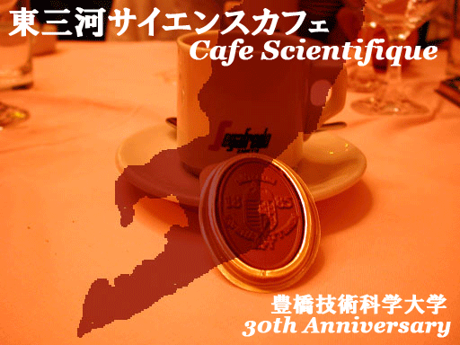

<HTML><HEAD>
<META HTTP-EQUIV="Content-type" CONTENT="text/html; charset=x-euc-jp">
<META HTTP-EQUIV="imagetoolbar" CONTENT="no">
<TITLE>Cafe Scientifique in HIGASHI-MIKAWA, K. J. Kawai.</TITLE>
</HEAD></HTML>

<!-- Copyright (c) 2007, Kazuhisa Kawai, All rights reserved.	-->
<!-- 								-->
<!-- 	Index.HTML：東三河サイエンスカフェ：トップページ	-->
<!-- 								-->

<BODY BGCOLOR=#660000 TEXT=black VLINK=#660000 LINK=#660000>

<CENTER>

<TABLE WIDTH=802 CELLPADDING=0 CELLSPACING=0 BORDER=0>
<TR VALING=top>
<TD WIDTH=1 BGCOLOR=black>
</TD>
<TD>
<TABLE WIDTH=800 CELLPADDING=10 CELLSPACING=0 BORDER=0>
<TR VALING=top><TD BGCOLOR=white>

<P>
<CENTER>

</CENTER>
<P>

<TABLE BORDER=0 BGCOLOR=#660000 width=100%><TR>
<TD align=center> </TD></TR></TABLE>

<CENTER><FONT face="Arial, Sans-Serif" size="2">
<A HREF="http://www.ita.tutkie.tut.ac.jp/~kawai/kawai/disclaimer.html">Copyright (c) 2007, Kazuhisa Kawai, All Rights Reserved.</A><BR>
Please send comments to:
 <A HREF="mailto:kawai@tut.ac.jp">kawai@tut.ac.jp</A><BR>
Last updated July 25, 2007.<BR>
Since July 25, 2007.
</FONT></CENTER>

</TD></TR></TABLE>

<TD WIDTH=1 BGCOLOR=black>
</TD>
</TR></TABLE>

</CENTER>
</BODY>
</HTML>
